9
വീണ്ടും വീണ്ടും കൂട്ടുമ്പോോൾ

9
വീണ്ടും വീണ്ടും കൂട്ടുമ്പോോൾ

ഗണിതം സ്റ്റാൻഡേർഡ് - III
• ചേർത്തു വരയ്ക്കൂ... 3×2
10
16
4×2
5×2
7×2
8
6×4
14
8×2
18
9
3×3
6
24
9×2
ഒളിച്ചിരിക്കുന്നതാര് ?
128


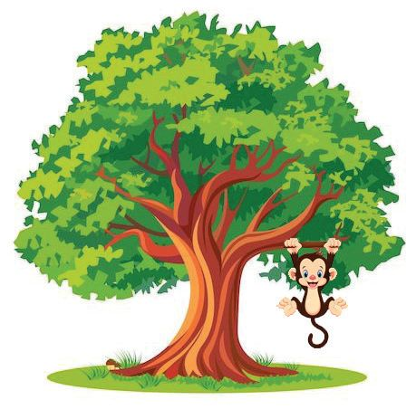
വീണ്ടും വീണ്ടും കൂട്ടുമ്പോോൾ
8×4
5×1
6×3
1×2
6×4
4×2
7 × 10
6×6
9×5
9×6
• ഈ ക്രിയകൾ ചെയ്യൂ. • ഉത്തരം വരുന്ന കളങ്ങളിൽ നിറം കൊൊടുക്കൂ. • ഒളിച്ചിരിക്കുന്നത് ആരെന്ന് കണ്ടുപിടിക്കൂ.
കണ്ടുപിടിക്കാമോോ ? മരമെത്ര... കിളിയെത്ര ? ഒരു മരത്തിൽ ഒരു കിളി വീതം ഇരുന്നാൽ ഒരു കിളി ബാക്കി വരും. ഒരു മരത്തിൽ 2 കിളി വീതം ഇരുന്നാൽ ഒരു മരം ബാക്കി വരും. മരമെത്ര ? കിളിയെത്ര ?
ഞങ്ങളെത്ര ? ഞങ്ങളെ 2 വീതം കൂട്ടങ്ങളാക്കാം. 3 വീതമുള്ള കൂട്ടങ്ങളുമാക്കാം. 10 ൽ താഴെയാണ് എണ്ണം. ഞങ്ങളെത്ര പേർ ?
129

ഗണിതം സ്റ്റാൻഡേർഡ് - III
പായസവിതരണം മീനുവിന്റെ പിറന്നാളാണ്. മൂന്നാം ക്ലാസി ലേക്ക് 4 ട്രേയിൽ പായസം കൊൊണ്ടുവന്നു. ഒരു ട്രേയിൽ 7 കപ്പ് പായസം ഉണ്ട്. എത്ര കുട്ടികൾക്ക് പായസം കൊൊടുക്കാം ? ....... + ....... + ....... + ....... = 4 × ....... = .......
രണ്ട് ട്രേയിലും കൂടി പായസം കൊൊണ്ടുവന്നപ്പപോൾ 2 കപ്പ് പായസം ബാക്കി വന്നു. മൂന്നാം ക്ലാസിൽ ആകെ എത്ര കുട്ടികൾക്ക് പായസം കൊൊടുത്തു ? ഞാൻ കണക്കാക്കിയ രീതി:
പൂർത്തിയാക്കുക 3 × 7 = 21 4 × 7 = 28 -----6×7=--
മറ്ററൊരു രീതി:
---------------10 × 7 = - -
എത്ര ട്രേയിൽ പായസം കൊൊണ്ടുവന്നു ? ഒരു ട്രേയിൽ എത്ര കപ്പ് പായസം ? ആകെ എത്ര കപ്പ് പായസം ? മൂന്നാം ക്ലാസിലെ കുട്ടികളുടെ എണ്ണം ?
130


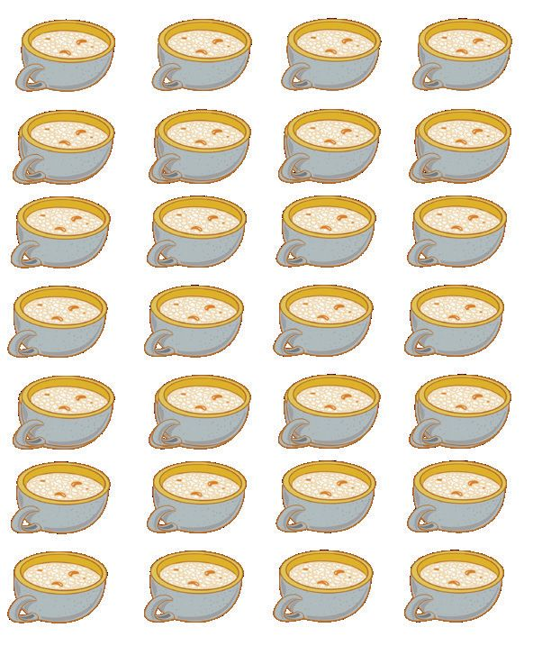
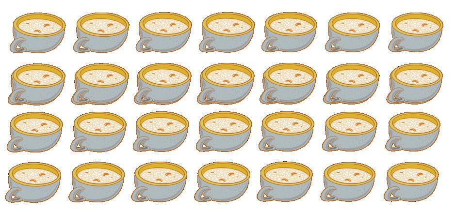
വീണ്ടും വീണ്ടും കൂട്ടുമ്പോോൾ
രണ്ടാം ക്ലാസിലേക്ക് രണ്ടാം ക്ലാസിലെ കുട്ടികൾക്ക് കൊൊടുക്കാൻ 10 ട്രേ പായസം വേണ്ടി വന്നു. രണ്ടാം ക്ലാസിൽ എത്ര കുട്ടികൾ ഉണ്ട് ?
ആഴ്ചപ്പാട്ട് ഏഴുദിനങ്ങൾ ചേരുമ്പപോൾ ആഴ്ചയൊൊന്നു പിറക്കുന്നു. ആഴ്ചകൾ രണ്ടുണ്ടെന്നാലോോ ദിനങ്ങളെത്ര പറയാമോോ ? പറയാം ഞങ്ങൾ പറയാമേ ദിനങ്ങളെണ്ണം പതിനാല്.
ഞാൻ കണക്കാക്കിയത്.
ഒരു ട്രേയിൽ 4 കപ്പ് പായസം വീതം 7 ട്രേയിൽ എത്ര കപ്പ് പായസം ?
7 കപ്പ് വീതം 4 തവണ 4 × 7 = 28
4 കപ്പ് വീതം 7 തവണ 7 × 4 = 28
131

ഗണിതം സ്റ്റാൻഡേർഡ് - III
തണൽ കുടുംബശ്രീ
തണൽ കുടുംബശ്രീ യൂണിറ്റ് കുട നിർമ്മിക്കുന്നുണ്ട്. മീനുവിന്റെ അമ്മയും ഈ യൂണിറ്റിലെ അംഗമാണ്. അവർക്ക് 11 കുടയ്ക്കുള്ള ഓർഡർ കിട്ടി. 3 കുട ഉണ്ടാക്കാനുള്ള കുടക്കമ്പികൾ വീട്ടിലുണ്ട്. ഒരു കുടയ്ക്ക് 8 കുടക്കമ്പികളാണ് വേണ്ടത്. വീട്ടിൽ ആകെ എത്ര കുടക്കമ്പികൾ ഉണ്ട് ? ....... + ....... + ....... = ....... × ....... = .......
ബാക്കി 8 കുടയ്ക്കുള്ള കുടക്കമ്പികൾ വാങ്ങാനായി അമ്മയോോടൊൊപ്പം മീനുവും പോോയി. എത്ര കുടക്കമ്പികൾ വാങ്ങണം ? 11 കുടയ്ക്ക് ആകെ എത്ര കുടക്കമ്പികൾ വേണം ?
ഞാൻ കണക്കാക്കിയ രീതി:
കൂട്ടുകാർ കണക്കാക്കിയ രീതി:
132

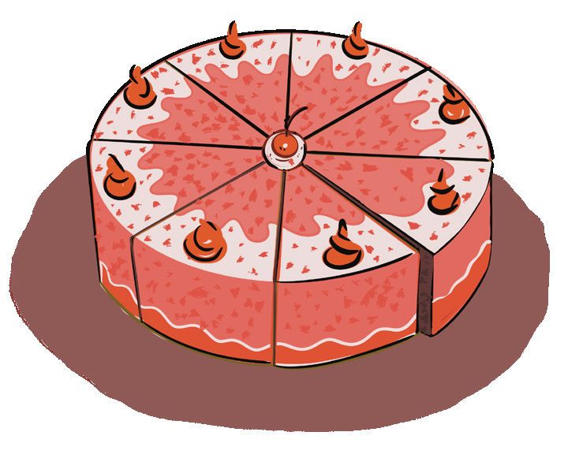
വീണ്ടും വീണ്ടും കൂട്ടുമ്പോോൾ
ഉത്തരം കണക്കാക്കി നോോട്ടുബുക്കിൽ എഴുതൂ... • ഒരു പായ്ക്കറ്റ് ക്രയോോണിന്റെ വില 8 രൂപയാണ്. ഇത്തരത്തിലെ 6 പായ്ക്കറ്റ് ക്രയോോൺ വാങ്ങാൻ എത്ര രൂപ വേണം ? • മീനുവിന്റെ സ്കൂളിലേക്ക് 8 പേപ്പർകട്ടർ വേണം. ഒന്നിന് 7 രൂപയാണ് വില. ആകെ എത്ര രൂപയാകും ? • ഒരു കേക്കിനെ 8 കഷണമായി മുറിക്കാം. 5 കേക്ക് വാങ്ങി കഷണങ്ങളാക്കി. എത്ര കഷണം കേക്ക് കിട്ടും ? • 127-ാം പേജിലെ ചെസ് ബോോർഡിന്റെ ചിത്രം കണ്ടല്ലോോ ? ചെസ് ബോോർഡിൽ എത്ര കളങ്ങളിലാണ് കരുക്കൾ ഉള്ളത് ? ചെസ് ബോോർഡിൽ ആകെ എത്ര കളങ്ങൾ ഉണ്ട് ? • വിഴിഞ്ഞം തുറമുഖത്തേക്ക് ചൈനയിൽ നിന്നും ക്രെയിനുമായി വന്ന കപ്പൽ യാത്രയ്ക്ക് 3 ആഴ്ചയെടുത്തു. എത്ര ദിവസമാണ് കപ്പൽ യാത്ര ചെയ്തത് ? • പൂർത്തിയാക്കുക. 1
2
8
16
1
2
7
3
3
4
4
6
7
40
64
5
8
42
133
49
9
10
9
10

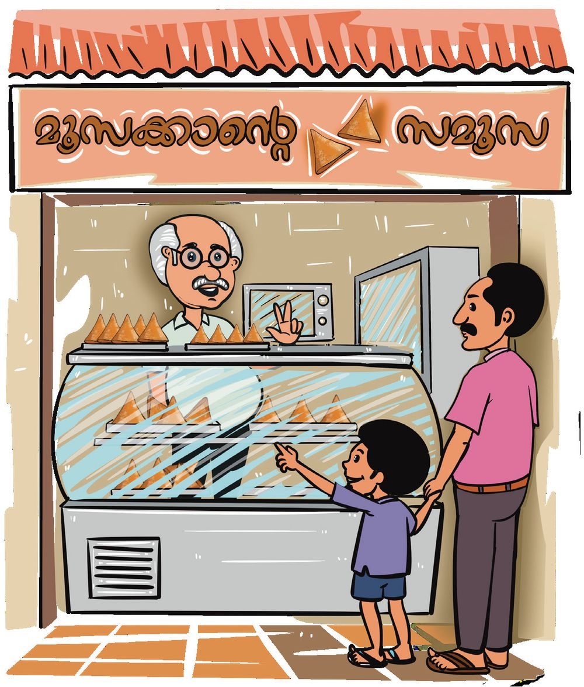
ഗണിതം സ്റ്റാൻഡേർഡ് - III
സമൂസ കച്ചവടം കുട ഉണ്ടാക്കുന്നവർക്ക് സമൂസ വാങ്ങാനായി മീനുവിന്റെ അച്ഛനും അനുജനും കടയിലെത്തി. ഒരു സമൂസയ്ക്ക് 9 രൂപയാണ് വില. അച്ഛൻ 8 സമൂസ വാങ്ങി. കച്ചവടക്കാരന് എത്ര രൂപ കൊൊടുക്കണം ?
ഞാൻ കണക്കാക്കിയത്.
3 × 9 = ........ 5 × 9 = ........ 7 × 9 = ........ 9 × 9 = ........
രണ്ട് 9 ചേർന്നാൽ നാല് 9 ചേർന്നാൽ ആറ് 9 ചേർന്നാൽ
2 × 9 = 18
8 × 9 = ............ 10 × 9 = 90 50 × 9 = ............ 100 × 9 = ............
134

വീണ്ടും വീണ്ടും കൂട്ടുമ്പോോൾ
ഗുണിച്ചുകളിക്കാം 1×1
2×1
3×1
4×1
5×1
6×1
7×1
8×1
9×1
1×2
2×2
3×2
4×2
5×2
6×2
7×2
8×2
9×2
1×3
2×3
3×3
4×3
5×3
6×3
7×3
8×3
1×4
2×4
3×4
4×4
5×4
6×4
7×4
1×5
2×5
3×5
4×5
5×5
6×5
1×6
2×6
3×6
4×6
5×6
1×7
2×7
3×7
4×7
1×8
2×8
3×8
1×9
2×9
10 × 1
1 × 10 2 × 10 3 × 10 4 × 10 5 × 10 6 × 10 7 × 10 8 × 10 9 × 10 10×10
ഈ ക്രിയകളുടെ ഉത്തരം നോോട്ടുബുക്കിൽ കളം വരച്ചെഴുതൂ. • നിറം കൊൊടുത്ത കളങ്ങളിലെ ഉത്തരം കണക്കാക്കി എഴുതൂ.
• എട്ടാമത്തെ വരിയിലെ ഉത്തരങ്ങൾ എഴുതുക. അവയുടെ പ്രത്യയേകത എന്താണ് ?
135

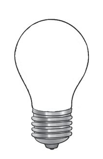

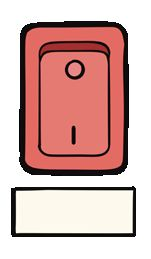


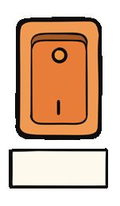
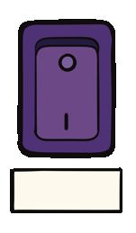
ഗണിതം സ്റ്റാൻഡേർഡ് - III
സ്വിച്ചിടൂ... ബൾബ് കത്തിക്കൂ... മീനു ഗണിതമേളയ്ക്കായി ചെയ്തത് നോോക്കൂ... സ്വിച്ചിന് താഴെയുള്ള ക്രിയകളുടെ ഉത്തരം വരുന്ന ബൾബുകൾക്ക് സ്വിച്ചിന്റെ നിറം കൊൊടുക്കുക. സ്വിച്ചും ബൾബും വരച്ച് യോോജിപ്പിക്കുക. 21
36
27
48
25
81
3×9
5×5
7×3
6×6
9×9
6×8
ക്രിക്കറ്റ് മത്സരം • ക്രിക്കറ്റ് മത്സരത്തിൽ മീനുവിന്റെ ചേച്ചി 11 സിക്സറും (6 റൺ) 15 ബൗണ്ടറിയും (4 റൺ) അടിച്ചു. ആകെ 15 × 1 = 15 എത്ര റൺസാണ് ഇങ്ങനെ കിട്ടിയത് ? 15 × 2 = 30 ഞാൻ കണക്കാക്കിയ രീതി: 15 × 3 = 45 15 × 4 = 60 15 × 5 = 75
ഗുണിക്കാതെ കണക്കാക്കാം
സിക്സറുകളിൽ നിന്നും
ബൗണ്ടറികളിൽ നിന്നും
കിട്ടിയ റൺസ്.
കിട്ടിയ റൺസ്.
10 പ്രാവശ്യയം 6 = 60
...... പ്രാവശ്യയം 4 = ......
1 പ്രാവശ്യയം 6 = 6
........................... = ......
11 പ്രാവശ്യയം 6 = 66
........................... = ......
29 × 8 =
30 × 8 = 240 31 × 8 = 50 × 5 = 51 × 5 = 255
ആകെ റൺസ് = 66 + 60 = 126
52 × 5 =
136

വീണ്ടും വീണ്ടും കൂട്ടുമ്പോോൾ
വളയുടെ വില ഒരു ഡസൻ വളയ്ക്ക് 25 രൂപയാണ് വില. മീനു 4 ഡസൻ ചുവപ്പ് വളയും 3 ഡസൻ നീല വളയും വാങ്ങി. ആകെ വില എത്രയാണ് ? ഞാൻ കണക്കാക്കിയ രീതി.
മറ്ററൊരു രീതി. ഒരു ഡസൻ 12 എണ്ണം
പട്ടിക പൂർത്തിയാക്കൂ. 1×6 = 6 2 × 6 = 12 ......... = ..... ......... = ..... ......... = ..... ......... = ..... ......... = ..... ......... = ..... ......... = .....
10 × 6 = 60 20 × 6 = 120 ......... = ..... ......... = ..... ......... = ..... ......... = ..... ......... = ..... ......... = ..... ......... = .....
44 × 6
മനക്കണക്കായി ഉത്തരം കണ്ടെത്താമോോ ? 40 × 6 = ....... 4 × 6 = ....... 44 × 6 = .......
• ഇതുപോോലെ 7, 8, 9 എന്നീ സംഖ്യകളുടെ ഗുണനക്രിയകൾ എഴുതൂ... • മനക്കണക്കായി ചെയ്യൂ... 110 × 6
52 × 6
38 × 6
• കൂടുതൽ ചോോദ്യങ്ങൾ ഉണ്ടാക്കൂ, മനക്കണക്കായി ചെയ്യൂ... 137

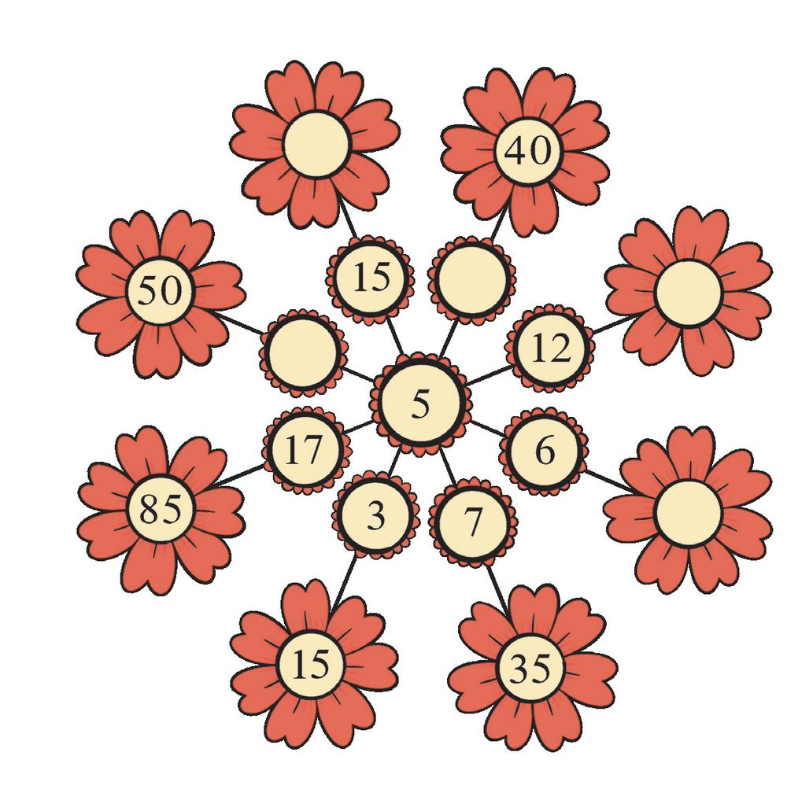
ഗണിതം സ്റ്റാൻഡേർഡ് - III
പൂക്കളം പൂർത്തിയാക്കുക
ക്രമം തുടരുക
1.
3, 6, 9, .........., .........., ..........
2.
4, 8, .........., .........., 20, 24, ..........,
3.
27, 36, 45, .........., .........., ..........
4.
45, 40, 35, .........., .........., ..........
5.
15, 30, 45, .........., .........., ..........
6.
25, 50, 75, .........., .........., ..........
7.
100, 200, 300, 400, .........., .........., ..........
ഞാൻ കണ്ടെത്തിയ പാറ്റേൺ.
1. ....................., .....................,.....................,....................., 2. ....................., .....................,.....................,....................., 3......................, .....................,.....................,....................., 4. ....................., .....................,.....................,.....................,
138

വീണ്ടും വീണ്ടും കൂട്ടുമ്പോോൾ
ഗണിതമേള മീനുവിന്റെ സ്കൂളിലെ ഗണിതമേളയോോടനുബന്ധിച്ച് നടത്തിയ മത്സരത്തിൽ 6 കുട്ടികൾ ജയിച്ചു. അവർക്ക് സമ്മാനമായി പുസ്തകം കൊൊടുത്തു. • ഒരു പുസ്തകത്തിന് 100 രൂപയാണ് വില. • 6 എണ്ണം വാങ്ങിയപ്പപോൾ ഒന്നിന് 5 രൂപ വീതം കുറച്ചു. ആകെ എത്ര രൂപ കൊൊടുത്തു ? ഞാൻ കണക്കാക്കിയ രീതി.
കൂട്ടുകാർ കണക്കാക്കിയ രീതി.
ഒരു പുസ്തകത്തിന് കൊൊടുത്ത വില പുസ്തകങ്ങളുടെ എണ്ണം ആകെ വില • പുസ്തകങ്ങളുടെ വിലയായി കച്ചവടക്കാരന് ഏതൊൊക്കെ നോോട്ടുകളാകും കൊൊടുത്തിരിക്കുക ? മറ്ററൊരു രീതി: നോോട്ടുകൾ
എണ്ണം
500 രൂപ
1
തുക
നോോട്ടുകൾ 500 രൂപ
200 രൂപ
200 രൂപ
100 രൂപ
100 രൂപ
50 രൂപ
1
50 രൂപ
20 രൂപ 10 രൂപ
20 രൂപ 2
10 രൂപ
5 രൂപ
5 രൂപ
ആകെ
ആകെ 139
എണ്ണം
തുക

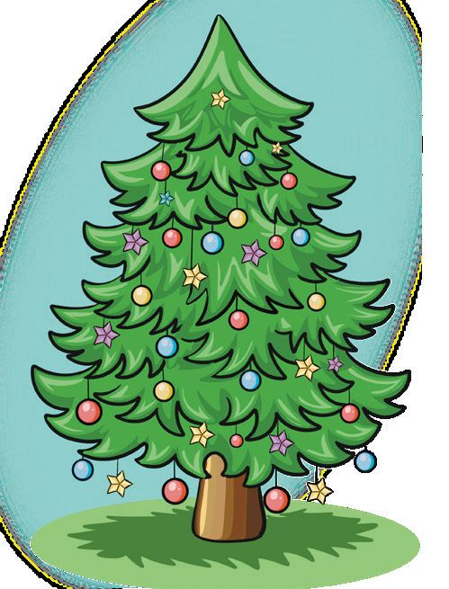
ഗണിതം സ്റ്റാൻഡേർഡ് - III
• കച്ചവടക്കാരന് കൊൊടുത്തത് 10 നോോട്ടുകൾ ആണ്. ഏതൊൊക്കെ നോോട്ടുകളായിരിക്കും കൊൊടുത്തത് ? നോോട്ടുകൾ
എണ്ണം
തുക
നോോട്ടുകൾ
500 രൂപ
500 രൂപ
200 രൂപ
200 രൂപ
100 രൂപ
100 രൂപ
50 രൂപ
50 രൂപ
20 രൂപ
20 രൂപ
10 രൂപ
10 രൂപ
5 രൂപ
5 രൂപ
ആകെ
ആകെ
എല്ലാവരുടെയും ഉത്തരം ഇതുതന്നെയാണോോ ?
ക്രിസ്മസ് ട്രീ മീനു ക്രിസ്മസ് ട്രീ ഒരുക്കുന്നതിനായി അലങ്കാര സെറ്റുകൾ 3 പാക്കറ്റ് വാങ്ങി. ഒരു പാക്കറ്റിന് 98 രൂപയാണ് വില. ആകെ എത്ര രൂപയായി ?
ഞാൻ കണക്കാക്കിയ രീതി:
മറ്ററൊരു രീതി:
140
എണ്ണം
തുക


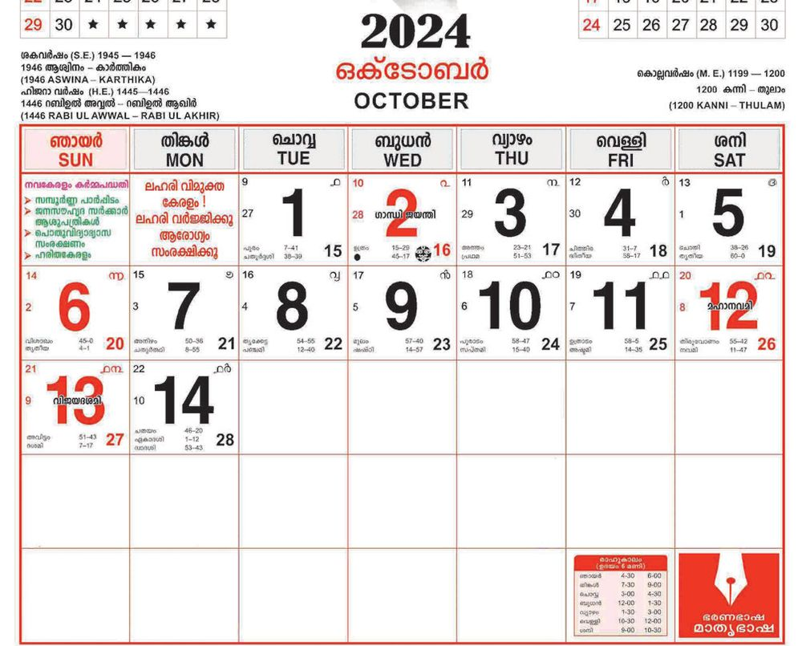
വീണ്ടും വീണ്ടും കൂട്ടുമ്പോോൾ
വിലയിരുത്തൽ പ്രവർത്തനങ്ങൾ 1.
ഫുട്്ബബോൾ സ്റ്റേഡിയം ഫുട്്ബബോൾ മത്സരം നടക്കുന്ന സ്റ്റേഡിയത്തിന്റെ ഒരു വരിയിൽ 99 പേർക്ക് ഇരിക്കാം. സ്റ്റേഡിയത്തിന് 10 വരിയാണ് ഉള്ളത്. ആകെ എത്ര പേർക്ക് ഇരിക്കാം ? ∗
ഒരു വരിയിൽ 100 ഇരിക്കാമായിരുന്നു ?
സീറ്റായിരുന്നെങ്കിൽ
എത്ര
പേർക്ക്
∗ സ്റ്റേഡിയത്തിലേക്ക് ഒരു ഗേറ്റ് കൂടി പണിയുവാൻ ഓരോോ വരിയിൽ നിന്നും 4 വീതം സീറ്റുകൾ ഇളക്കി മാറ്റിയാൽ സ്റ്റേഡിയ ത്തിൽ എത്ര സീറ്റുണ്ടാകും ? 2.
ഏതു തീയതി ? 2024 ഒക്ടടോബർ മാസത്തിലെ ആദ്യത്തെ തിങ്കളാഴ്ച 7-ാം തീയതി യാണ്. നാലാമത്തെ തിങ്കളാഴ്ച ഏതു തീയതിയാണ് ?
3.
എത്ര വാഴ ? മീനു തന്റെ വാഴത്തതോട്ടത്തിൽ ഒരു വരിയിൽ 7 വാഴ നട്ടു. ഇത്തരം 8 വരികളിലായി എത്ര വാഴ നടാം ? ഒരു വരിയിൽ 9 വാഴ വീതം നട്ടാൽ ആകെ എത്ര വാഴ നടാം ? 141

ഗണിതം സ്റ്റാൻഡേർഡ് - III
4.
ഗണിത ക്വിസ് മീനുവിന്റെ സ്കൂളിലെ ഈ മാസത്തെ ഗണിത ക്വിസിൽ 8 പേരാണ് ജയിച്ചത്. അവർക്ക് പഠനോോപകരണകിറ്റ് സമ്മാനമായി നൽകാൻ തീരുമാനിച്ചു. കിറ്റിലെ 6 ഇനങ്ങൾക്ക് മിക്കി സ്റ്റോഴ്സിലെയും ഡോോറ സ്റ്റോഴ്സിലെയും വില താഴെ കൊൊടുക്കുന്നു.
മിക്കി സ്റ്റോഴ്സ്
ഡോോറ സ്റ്റോഴ്സ്
പെൻസിൽ 5 രൂപ
പെൻസിൽ 4 രൂപ
പേന 8 രൂപ
പേന 10 രൂപ
റബ്ബർ കട്ട 3 രൂപ
റബ്ബർ കട്ട 3 രൂപ
സ്കെയിൽ 7 രൂപ
സ്കെയിൽ 9 രൂപ
സ്കെച്ച് പെൻ പായ്ക്കറ്റ് 30 രൂപ
സ്കെച്ച് പെൻ പായ്ക്കറ്റ് 27 രൂപ
ക്രയോോൺ പായ്ക്കറ്റ് 10 രൂപ
ക്രയോോൺ പായ്ക്കറ്റ് 8 രൂപ
∗ സമ്മാനങ്ങൾ ഏതു കടയിൽ നിന്നും വാങ്ങുന്നതാണ് മെച്ചം ? ∗ 8 പേർക്കുമുള്ള സമ്മാനം ഡോോറ സ്റ്റോഴ്സിൽ നിന്നും വാങ്ങിയാൽ എത്ര രൂപ കൊൊടുക്കേണ്ടി വരും ? ∗ മിക്കി സ്റ്റോഴ്സിൽ നിന്നാണെങ്കിലോോ ? ∗ വിലവിവരം നോോക്കി രണ്ടു കടകളിൽ നിന്നുമായാണ് സാധനങ്ങൾ തെരഞ്ഞെടുത്തത്. വാങ്ങിയ സാധനങ്ങളുടെ പട്ടിക പൂർത്തിയാക്കുക.
142

വീണ്ടും വീണ്ടും കൂട്ടുമ്പോോൾ
സാധനങ്ങൾ
വില
ആകെ ∗ 8 കിറ്റിനായി എത്ര രൂപ ചെലവായി ? 5. കളം പൂർത്തിയാക്കാം
•
ഒഴിഞ്ഞ കളങ്ങൾ പൂർത്തിയാക്കണം.
• വരിയായും നിരയായും ഗുണിക്കണം. 2
×
× 1
=
× ×
= .......
3
3
=
= ×
.......
=
.......
.......
×
×
.......
.......
=
=
18
.......
143
×
.......
=
....... ×
.......
× =
....... ×
.......
.......
....... =
=
24

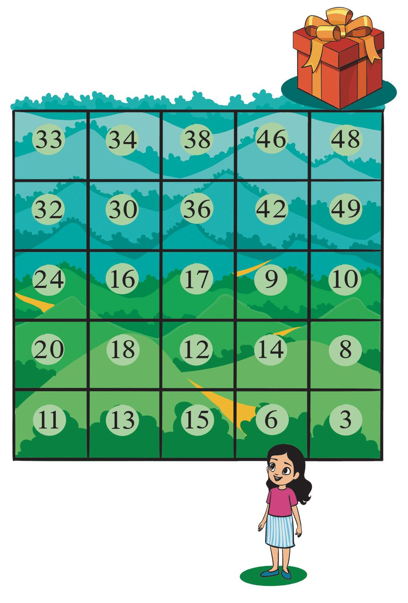

ഗണിതം സ്റ്റാൻഡേർഡ് - III
6. സമ്മാനം നേടാം
മീനുവിനെ സമ്മാനത്തിനടുത്ത് എത്തിക്കൂ.
6 ന്റെ
ഗുണനത്തിലൂടെ പോോയാൽ മതി.
144